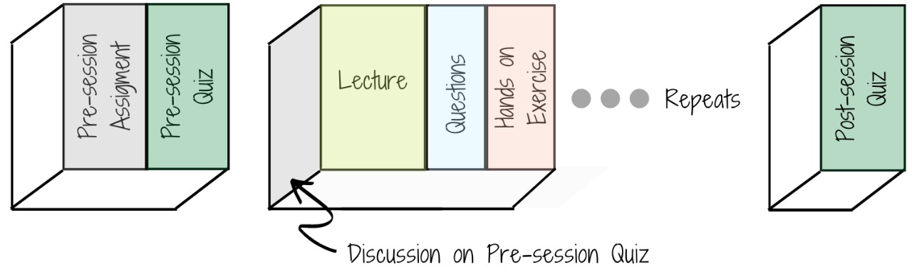
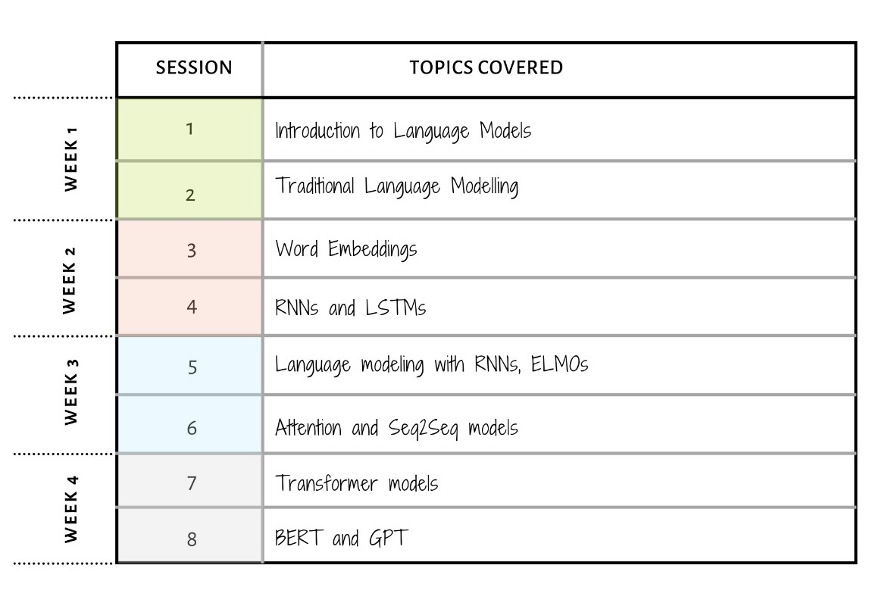
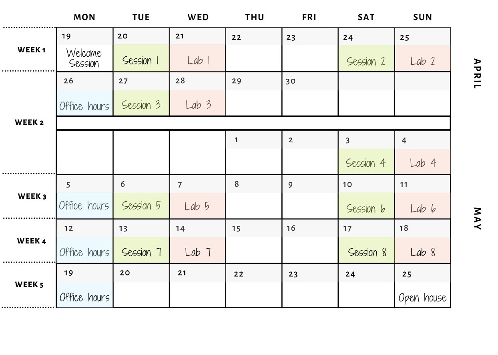
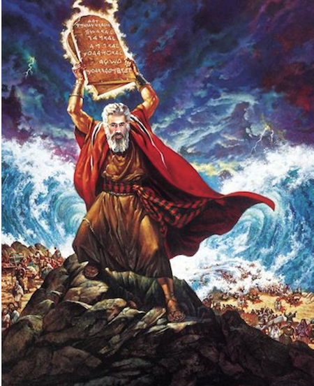

Sunny day Sweepin’ the clouds away, On my way to where the air is sweet, Can you tell me how to get, How to get to Sesame Street?
Welcome to the First Edition of AI3. The objective of this module is to provide fundamental understandings of the latest language models built using deep learning architectures.
You will start with the traditional language models, learn about word embeddings, attention and then move on to transformer models.
At the end of this module, you will be able to build efficient language models, and tell how well they are performing.
This page introduces you to the team, the basic instructions, the schedule and various elements of our class.
If you would like to apply to this course, please go here.
We also provide this course as part of our Masters and Accelerated program, check this link out to get more information and apply.
You can read more about him here.
The teaching assistants for the duration of this course will be:


We have very carefully designed the coursework to give you, the student, a wholesome learning experience.
Each week shall include:

Before the session begins, students are expected to complete a pre-class reading assignment and and attempt a quiz based on the same.
A session will have the following pedagogy layout which will be repeated three times:
After the session, students are expected to complete a short post-class quiz based on the principal concepts covered in class.

A lab is a TA driven one hour session that is divided into 3 major parts.
After discussing exercises, we will have a semi-formal Q/A session. All doubts pertaining, but not limited, to the previous session, and homeworks are welcome.

There will be a Welcome Session scheduled on Monday, 19 April 2021 at 7:30 PM IST for all registered students.
Please check your mail for more information.

NOTE: Below timings are in IST
Lecture Sessions:
Tuesday Series: 7:30 PM - 9:30 PM
Saturday Series: 6:30 PM - 8:30 PM
Lab Sessions:
Wednesday Series: 7:30 PM - 8:30 PM
Sunday Series: 6:30 PM - 7:30 PM
Office hours:
7:30 PM - 8:30 PMPlease find a more detailed course schedule here.
Your are expected to have a working knowledge of python, along with these three libraries:
All exercises in this course will be done in jupyter notebooks.
Note: Prior knowledge of high level machine learning libraries such as keras is necessary for this module
Before you begin the course, we have prepared for you a simple exercise to ensure your proficieny of the above libraries.
This will help you assess your preparedness for the course, and will also help you familiarize yourself with the platform.

We actively seek and welcome people of diverse identities, from across the spectrum of disciplines and methods since Artificial Intelligence (AI) increasingly mediates our social, cultural, economic, and political interactions [1].
We believe in creating and maintaining an inclusive learning environment where all members feel safe, respected, and capable of producing their best work.
We commit to an experience for all participants that is free from – Harassment, bullying, and discrimination which includes but is not limited to:
Reference:
[1] K. Stathoulopoulos and J. C. Mateos-Garcia, “Gender Diversity in AI Research,” SSRN Electronic Journal, 2019 [Online]. Available: http://dx.doi.org/10.2139/ssrn.3428240.
We assume you have a Univ.AI account, created when you signed up at course.univ.ai. If not, email programs@univ.ai.
All exercises and homeworks in this course will be done in jupyter notebooks. This link will help you setup jupyter lab and get you acquianted with jupyter notebooks.
Our module policies around collaboration and grading are listed here. Our expectations of you are also laid out in that document.
As you will learn in this course, language models are not just about writing efficient algorithms.
It requires proficiency in critical thinking, ideation & presentation, along with strong foundations in statistics, computer science & mathematics.
Keeping that in mind, you are adviced to give your full active attention to every session, homework & exercise.
We wish you best of luck for your AI journey.
